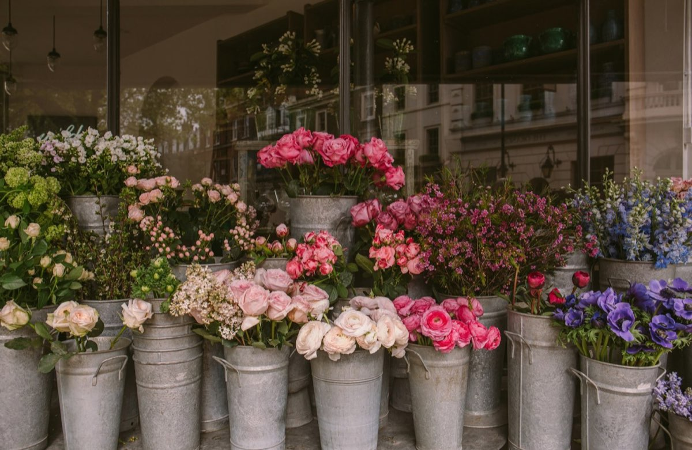
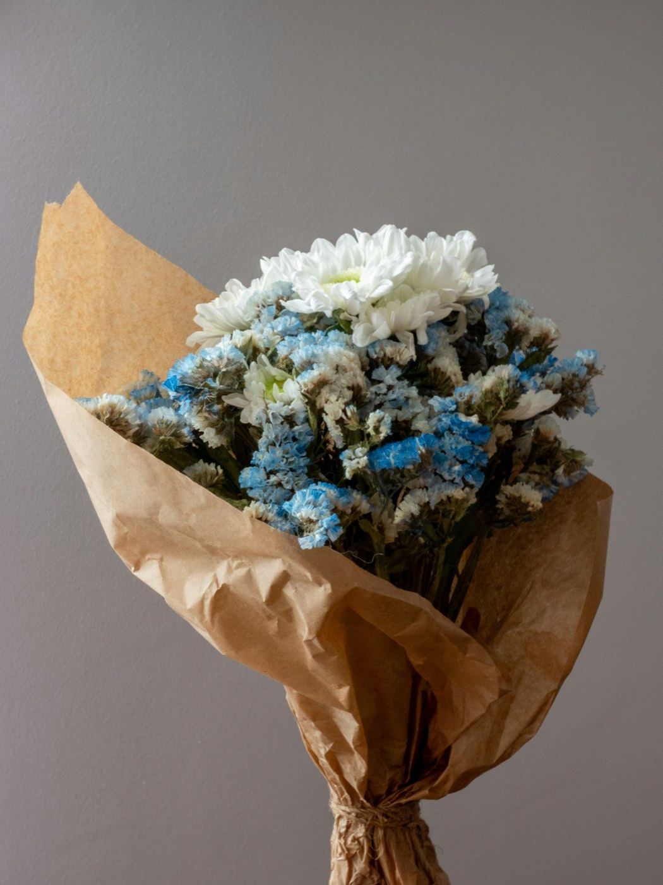
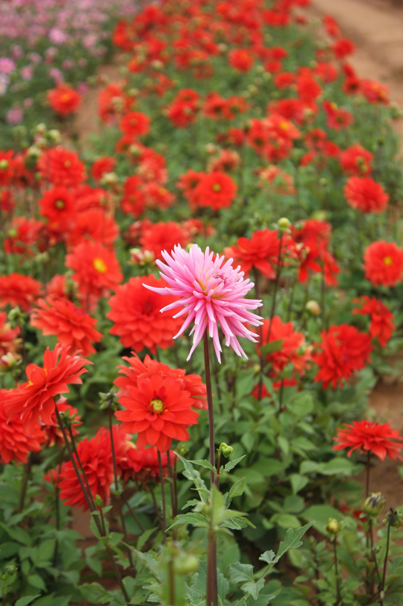

The number on a flower's vase-life tag is its total lifespan, not what's left by the time it reaches your door.
Everyday stems, local delivery, and Tacoma-grown sourcing from the Skagit and Puyallup valleys — a
working studio florist's counter, published as a set of real documents instead of a single photo of a
finished bouquet.
What's actually in season, not a generic catalogue
This week's market board
The honest reason "florist's choice" exists: a Pacific Northwest bloom calendar, species by month. Nobody,
however well-sourced, has fresh local peonies in December.
How to read this chart
A checkmark marks a genuinely in-season month for that species around Tacoma, not a shipping window — the
mark is a text symbol, not a colour alone, so it reads the same with or without colour vision.
Species availability, January through December
Species
Jan
Feb
Mar
Apr
May
Jun
Jul
Aug
Sep
Oct
Nov
Dec
Hellebore
✓
✓
✓
Narcissus & daffodil
✓
✓
✓
Tulip
✓
✓
✓
✓
Peony
✓
✓
Sweet pea
✓
✓
✓
Delphinium
✓
✓
✓
Garden rose (local)
✓
✓
✓
✓
Dahlia
✓
✓
✓
✓
Zinnia
✓
✓
✓
Sunflower
✓
✓
✓
Chrysanthemum
✓
✓
✓
Evergreen & winter greens
✓
✓
✓
✓

This week's stems Pulled straight from the cooler — whatever the market board above lists as genuinely in season. Market bouquet Wrapped and ready — the shop's florist's-choice bouquet, built from the week's market board.
Shop the standing collection
Real, fixed prices — no "contact for pricing."
Item, description, price
Item
Description
Price
Bud vase
A single striking stem or a small trio in a glass bud vase — the everyday desk or nightstand order.
$18
Market bouquet (florist's choice)
A hand-tied bouquet pulled from this week's market board. Price is fixed; exact stems vary by season and are not settled in advance — see the seasonal chart above.
$45
Wrapped dozen (garden roses)
A dozen garden roses, wrapped in kraft paper with ribbon, no vase.
$65
Sympathy spray
A standing spray arrangement sized for a funeral home or memorial service, same-day capable ahead of the delivery cutoff.
$95
Centerpiece, small
A low, table-height arrangement for an everyday table or a small gathering.
$55
Centerpiece, large
A fuller, taller arrangement for a longer table or a larger gathering.
$95
Plant gift
A potted plant, wrapped, for a gift that outlasts a cut arrangement.
$40
Florist's choice, honestly
What's fixed
The price, the size band, and the standard of stems used.
What's not fixed
The exact species and stem count — pulled from whatever this week’s market board lists as genuinely in season.
The countdown starts at the farm, not the shop door
Freshness math
A stem's total vase life is a fixed, published number per species — but that clock starts ticking the
moment it's cut. Roughly 80% of cut flowers sold in the US are imported, moving through a cold chain that
maxes out around 12 days even under efficient standing orders, with the fastest shipments still running
about 4 days farm-to-store. A stem cut in the Skagit or Puyallup Valley and delivered to this studio
within a day or two keeps nearly all of its published vase life instead.
Reading the vase-life table
Remaining vase life = published total − days already spent cut-to-shop. The
conservative low end of each published range is used as the "total" below, so the remaining figure this
page shows never overstates what a stem actually has left.
Species, published vase life, typical source, cut-to-shop days
Species
Published vase life
Typical source
Cut-to-shop days
Carnation
14–21 days
Local & wholesale
1–6 days
Alstroemeria
10–14 days
Wholesale (imported)
4–8 days
Garden rose
7–10 days
Local (Skagit Valley)
1–2 days
Tulip
7–10 days
Local (Skagit Valley)
1–2 days
Ranunculus
7+ days
Local (Skagit Valley)
1–2 days
Peony
5–7 days
Local (Skagit Valley, seasonal)
1–2 days
Dahlia
4–7 days
Local (Puyallup Valley)
1–2 days
Conditioning matters: even a stem with published days left can wilt early if it isn't recut and hydrated
properly — see care instructions below.
The same species, two very different countdowns
Garden rose — Skagit-grown, delivered next day
7d published − 1d cut-to-shop = 6d remaining
Garden rose — Wholesale-imported, ~6 days in transit
7d published − 6d cut-to-shop = 1d remaining
Dahlia — Puyallup-grown, delivered next day
4d published − 1d cut-to-shop = 3d remaining
Peony — Skagit-grown, delivered within 2 days
5d published − 2d cut-to-shop = 3d remaining
Recutting on arrival The first step that actually protects a stem's remaining vase life — see care instructions below.
Zones, fees & cutoff times
Delivery
Four delivery zones across Tacoma and the South Sound, each with its own fee and same-day cutoff time.
Zone, fee, same-day cutoff
Zone
Fee
Same-day cutoff
Tacoma core (98402–98406)
$8
1:00 PM
North Tacoma & Ruston (98407)
$10
1:00 PM
Lakewood & University Place
$14
11:00 AM
Puyallup & Sumner
$16
10:00 AM
How ordering works
Choose a sizePick an arrangement size from the standing price list, or the seasonal market bouquet.
Pick a delivery zoneZone sets the fee and the same-day cutoff time — see the delivery table above.
Add the occasion & messageA short message and the occasion — birthday, sympathy, anniversary, altar — go straight onto the card.
Teresa confirmsA confirmation by phone or email before your zone’s cutoff, every time — never a silent order.
Ready for delivery Built to travel — wrapped and boxed at the shop, not styled loose for a photo.
Place an order
Call or email the shop with the size, your delivery zone, the date and the card message. Every order is confirmed before your zone’s cutoff.
Three tiers, each pulling that cycle's design from the same market board above — no two deliveries are
typed identically.
Tier, stem count band, price, cadence
Tier
Stem count
Price
Cadence
Weekly
6–8 stems
$42
Every week
Biweekly
8–10 stems
$58
Every other week
Monthly
10–14 stems
$85
Once a month
Subscription cadence
Choose a frequencyWeekly, biweekly or monthly — see the tiers table above.
This week's design pulls from the market boardNo two deliveries are typed identically — each one is built from what the seasonal chart shows in stock that week.
Delivery dayDelivered on your chosen day, inside your zone’s standing delivery window.
Pause or swap anytimeNo long-term contract — see the pause & swap terms above.
Pause & swap terms
Pause
Skip any upcoming delivery online or by phone, no fee, any time before that delivery’s cutoff.
Swap
Trade this cycle’s design for a different size within the same tier, same notice window.
Cancel
Cancel anytime — no long-term contract on any tier.
A weekly delivery This is what a subscription actually looks like on a Thursday — not a styled product shot.
Two standing parts of this shop's everyday work, not special requests.
Same-day sympathy flowers
Sympathy sprays and standing arrangements, built and delivered same-day ahead of a zone's cutoff — a
genuine, everyday capacity, handled quietly rather than promoted. Shown here as arrangement photography
only, nothing from the service itself.
Restraint by design
White and green, arrangement only — never a photograph of the service itself.
Standing altar arrangement — two Tacoma parishes
Teresa keeps a standing weekly altar-flower relationship with two Tacoma parishes — a genuine,
ongoing part of this shop's revenue and its place in the neighborhood, not a one-time donation. Contact
the shop directly to discuss a standing arrangement for your own parish.
Here's what a bouquet actually costs to build
The Proctor District bouquet
A stem recipe with real numbers, not a mystery: stems, hard goods and design labor, summed to the shelf
price — the trade's own pricing convention, shown instead of asserted.
Reading the recipe
Fresh stems mark up 3.5× from wholesale; hard goods mark up 2.25×;
design labor is charged at 22% of the marked-up materials total — every
line below sums to the next, computed once, never typed twice.
Line item, quantity, wholesale cost, retail line total
Line item
Qty
Wholesale / stem
Retail line total
Garden rose (Skagit-grown)
5
$2.20
$38.50
Dahlia (Puyallup-grown)
3
$1.80
$18.90
Delphinium (Skagit-grown)
4
$1.40
$19.60
Seasonal foliage & filler
6
$0.60
$12.60
Hard goods (vase, foam & tape, ribbon)
—
$7.00
$15.75
Materials total
$105.35
Design labor (22% of materials)
$23.18
Shelf price
$128.53
The stems behind the recipe Garden roses, dahlias and delphinium — the same species named in the recipe table above.
What protects the days a stem has left
Care instructions
Two short routines: what happens the moment flowers arrive, and what keeps them going afterward.
Conditioning on arrival
UnwrapRemove all wrapping and packaging as soon as the flowers arrive — paper and sleeves trap ethylene.
Recut at 45°, under waterA fresh diagonal cut, made underwater or immediately submerged, keeps air out of the stem.
Strip foliage below the waterlineAny leaf sitting in the water rots and feeds bacteria that shorten every stem’s vase life.
Hydrate 1–2 hours, cool and darkA cool, dim spot for the first hour or two lets stems fully rehydrate before they’re arranged or displayed.
Feed preservativeFlower food in the vase water measurably extends vase life over plain water — the packet is not decorative.
Vase care at home
Recut every 2–3 daysA fresh angled cut re-opens the stem so it can keep taking up water.
Change the water every 2–3 daysRinse the vase each time — cloudy water means bacteria, not just old water.
Keep from heat, fruit & draftsDirect sun, heating vents, a fruit bowl and cold drafts all shorten a bouquet’s remaining days.
Care & conditioning glossary
Conditioning
The full process of preparing a cut stem to last: recut, strip, hydrate, then feed — not just "put it in water."
Hydrate
Letting a freshly recut stem take up water fully before it’s arranged or displayed, usually 1–2 hours in a cool, dark spot.
Preservative
The flower-food packet — sugar, acidifier and a mild antibacterial agent — that measurably extends vase life over plain water.
Ethylene
A ripening gas released by fruit and by wilting flowers themselves, which shortens nearby blooms’ remaining vase life — the reason cut flowers stay clear of the fruit bowl.

Wrapped to travel Wrapped loosely so stems can still breathe — a tight wrap traps ethylene and shortens vase life.
Tacoma, on purpose
About Teresa & the studio
Teresa Nakamura is a third-generation Japanese-American florist running Nakamura Floral Co. from the
Proctor District in Tacoma, Washington — a real Pacific Northwest flower region: Tacoma sits
between the Skagit Valley (tulips, dahlias) and the Puyallup Valley, historically the US's dahlia-growing
capital.
Weddings & events
Weddings and events exist here as "ask about" work, not the centerpiece of this page. How it works,
in short:
InquiryA short note with your date and venue starts the conversation.
ConsultA working session on palette, budget band and the venue’s own constraints.
Final count, 2 weeks outGuest count and final stem order locked two weeks before the date.
Delivery & installDelivered and installed on-site, timed to the venue’s own schedule.
Trained at a big-city wholesale flower market before returning home to open her own studio — the
apprenticeship this page's document-first habit comes from.
Sourcing
Sources through a farmer-owned flower co-op in Seattle, rather than import wholesalers —
the reason so much of the vase-life table above reads "local."
Family history
Teresa's grandparents farmed in the Puyallup Valley before 1942, part of the historic
Japanese-American farming community of that valley — a fact this shop's sourcing choices carry forward,
stated plainly rather than dramatized.

Puyallup Valley dahlias The Puyallup Valley's historic dahlia fields — the source behind the dahlia line in the recipe above.
Glossary
Growers’ co-op
The farmer-owned growers’ co-op Nakamura Floral Co. sources through, rather than import wholesalers.
Cut-to-shop days
How many days pass between a stem being cut at the farm and arriving at this shop — the only other input the remaining-vase-life figure needs.
Stem recipe
A priced list of the exact stems, hard goods and labor that make up one arrangement, summed to its shelf price — not a mystery number.
Wholesale cost
What the shop itself pays a grower or the co-op per stem, before any markup — the number a stem recipe starts from.
What customers say, and what they ask
Customer trust & FAQ
"My Thursday delivery is the one thing on my calendar I never move. Six months in, and it’s never once been a bouquet I didn’t like." — Weekly subscription customer, Proctor District
"We called at nine in the morning for a service that afternoon, and the spray was at the funeral home by noon. I didn’t expect that, on a day like that one." — Family, same-day sympathy order
Why can't I get peonies in December?
Because they’re a real Pacific Northwest early-summer crop, genuinely in the ground from roughly May through June and nowhere near a Skagit or Puyallup field in December — see the seasonal availability chart above. A shop that claims otherwise is either flying them in at a steep cost and vase-life penalty, or not telling you the truth about what’s in the bouquet.
Do you deliver same-day?
Yes, inside a stated cutoff time that varies by delivery zone — as early as 10:00 AM for Puyallup & Sumner, as late as 1:00 PM for the Tacoma core. See the delivery table above for your zone’s exact cutoff.
Can you do sympathy flowers for a service tomorrow?
In almost every case, yes — sympathy work is a standing part of this shop’s everyday capacity, not a special request. Call ahead of your zone’s same-day cutoff when the service is today; tomorrow’s service gives the full working day to build it properly.